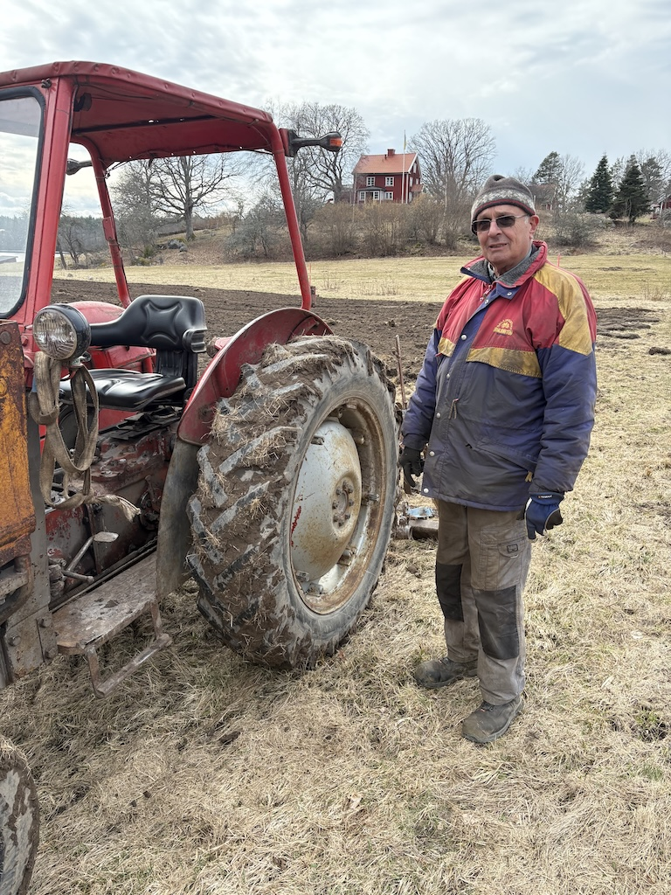
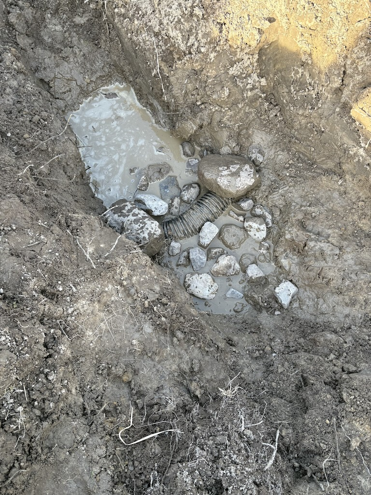
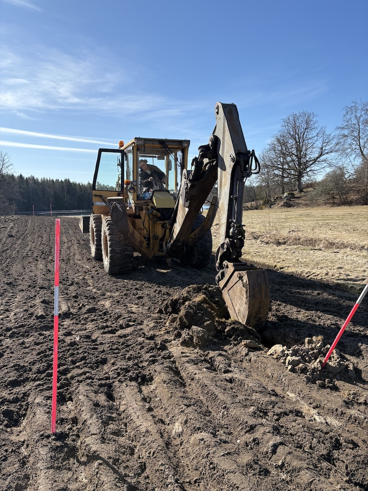
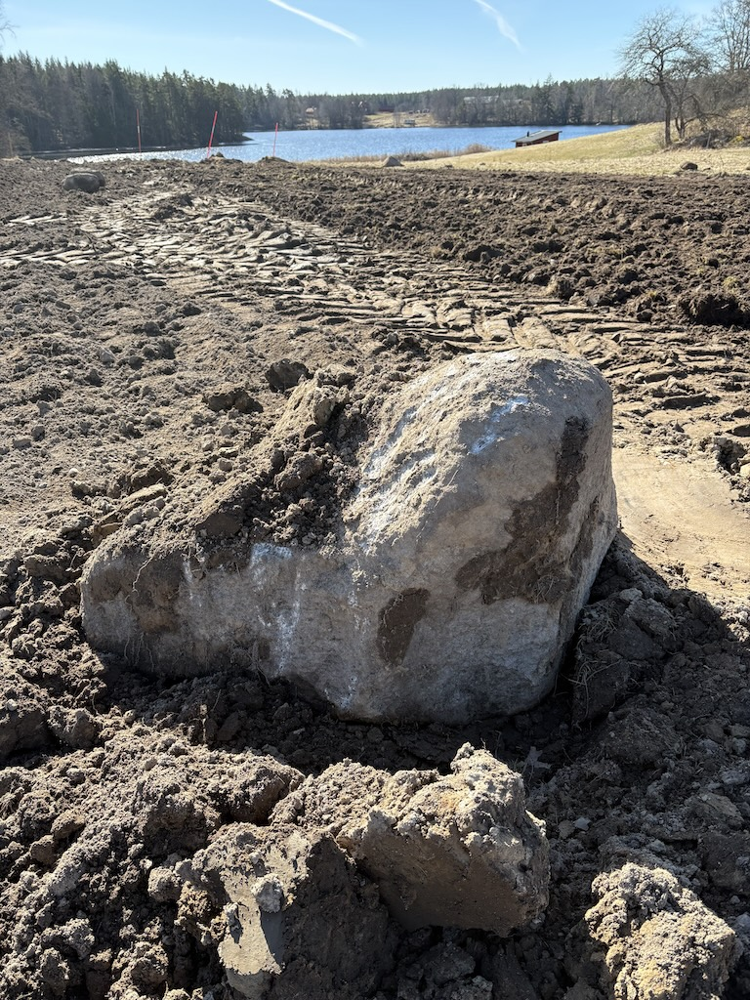
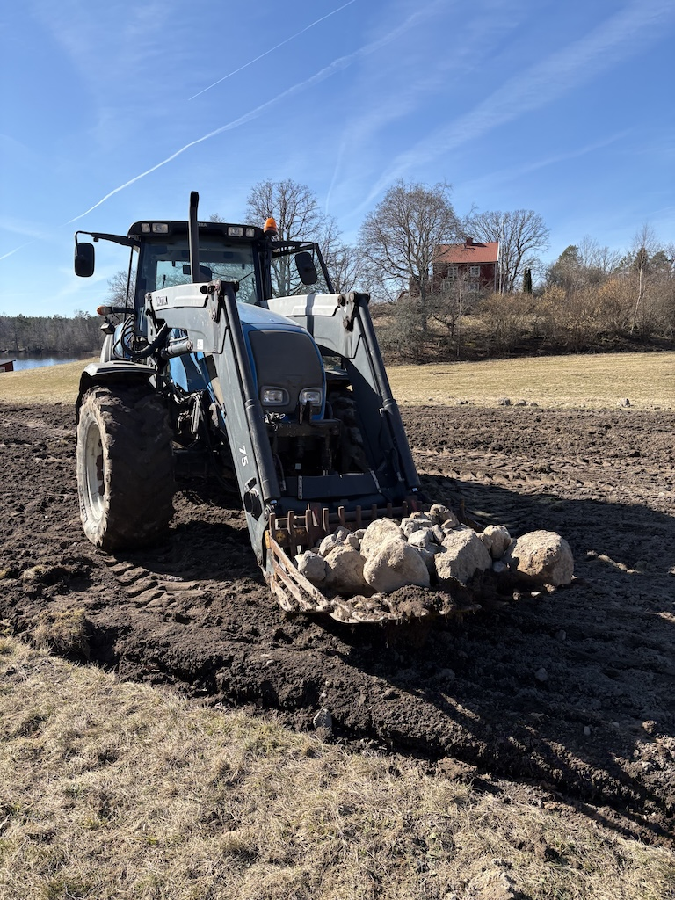

Finjustering av åkern
Nu när vintern är mer eller mindre bakom oss är det dags att ge vår lott ännu en justering, denna gång med rotavator.
Thom dyker upp med vad som kommer att bli den första av tre traktorer under de kommande dagarna. Den första är den minsta, en röd traktor bakom vilken han har kopplat rotatorn. Eftersom lotten är relativt liten är han klar och färdig på mindre tid än det tar att mosa en kopp te.

Det stora jobbet kommer dagen efter, när han dyker upp i sin något större gula traktor. Vår vänliga expert i grannskapet, Jonas Hellqvist, har rekommenderat oss att vi bör syfta på att gräva våra tre rader till ett djup på mellan 60–90 centimeter. Detta steg hjälper till att säkerställa att jorden under växterna blir ordentligt luftad och att större stenar som kan påverka rotsystemen negativt plockas ut. Thom arbetar försiktigt längs varje rad, men trots våra bästa ansträngningar för att undvika de platser där vi tror det finns dränering, lyckas vi ändå att skära inte bara ett utan två rör under processen att gräva ut den första raden.

När Thom har åkt iväg för dagen lyckas jag klättra ner i gropen och reparera båda rören med ny slang, men det är hårt och svettig arbete trots den bitande kylan. I ett hål har marken redan börjat fyllas med lerigt vatten, vilket förvandlar jorden till en slags klibbig snöskväla. Vid ett tillfälle blir det så illa att jag tillfälligt förlorar en gummistövel till slammet. Ändå, efter ungefär en timme lyckas jag fixa båda rören och kontrollera att vattnet fortfarande flödar ut till diket från båda. Jobbet är gjort!

På den tredje dagen kommer Thom med sin största traktor än. Hans blå traktor är så stor som en dubbeldäckarbuss, och han använder den för att lyfta och flytta några av stenarna vi plockade ut från marken under vår gräving dagen innan. Några av dessa stenar var enorma — konkret bevis på att grävingens var absolut nödvändig, särskilt här i Småland, där stenar och stenblock täcker landskapet.

Men nu, tre dagar och tre traktorer senare, har vi en åker som är så redo som den någonsin kommer att bli för plantering på våren.
